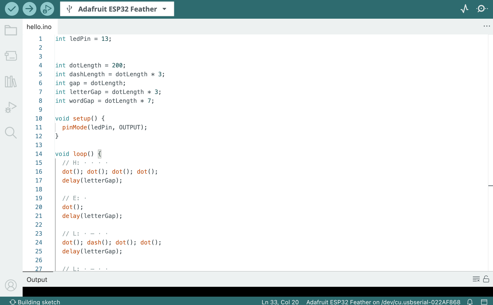
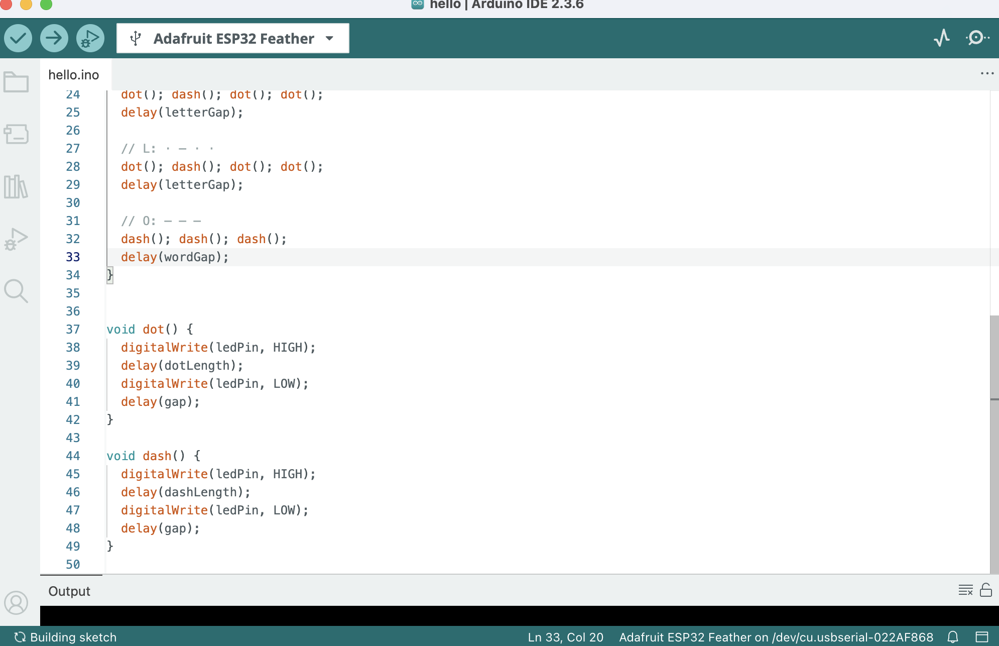
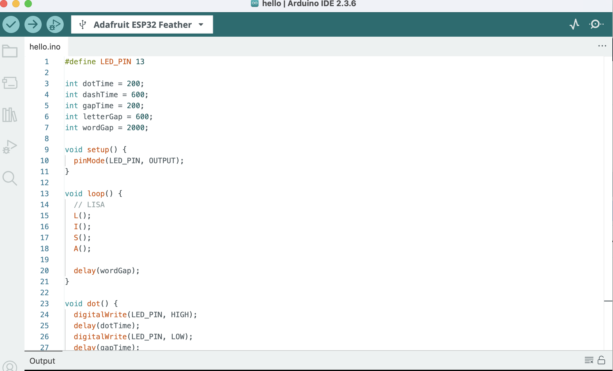
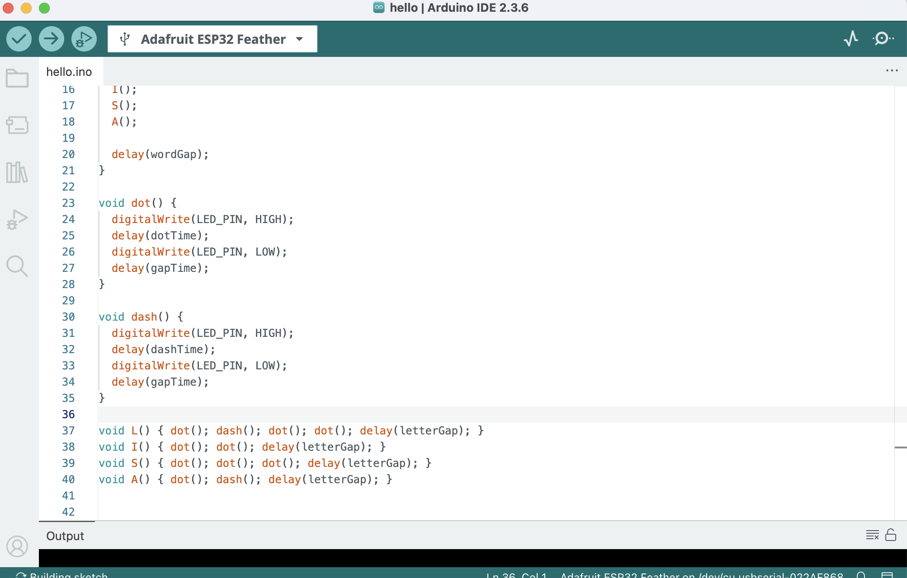
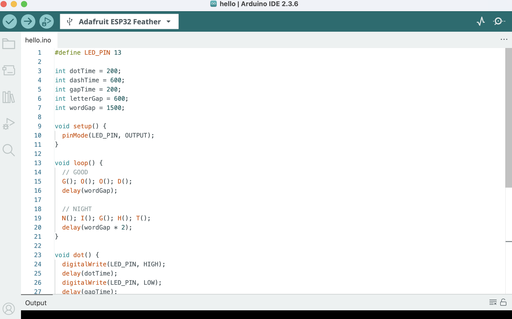
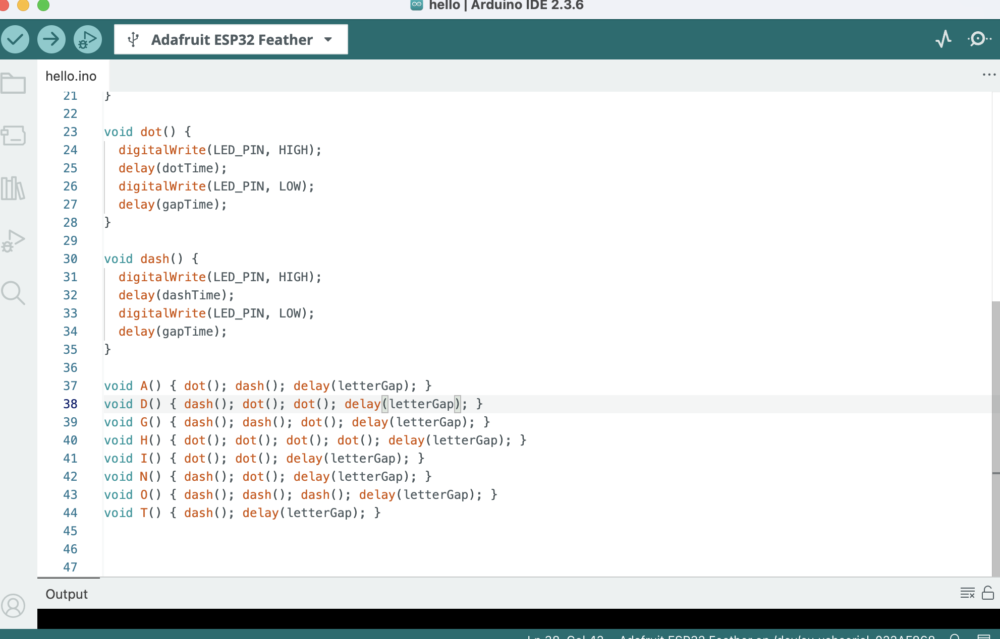

1.I used an ESP32 to translate the words “LISA,” “HELLO,” and “GOOD NIGHT”. I used codind to make the LED light flashing in Morse code. During the process, I explored how language is encoded into abstract machine readable patterns. The challenges I had was connecting the Potentiometer with the LED light? I looked up tutorials online but I can't make the potentiometer works at the same time with the LEDs.
2. Code of "Hello" in Morse Code  
3. Code of "Lisa" in Morse Code  
4. Code of "Good Night" in Morse Code  